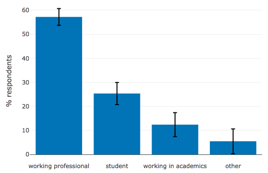
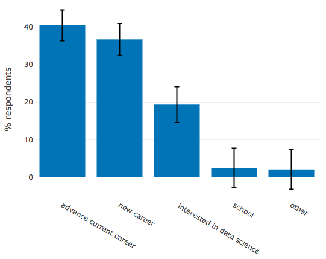

Instructor Onboarding:
Designing a Course

Version 0.1
See http://authoring.datacamp.com/ for full documentation

Overview
- Use the ideas we have seen so far as the basis for a repeatable lesson design process
- Described as a sequence, but always iterative in practice
1) Brainstorming
- What problems will learners solve?
- What concepts and techniques will they learn?
- What tools or data sets will they use?
- What terms or jargon will you define?
- What analogies or heuristics will you use?
- What mistakes or misconceptions do you expect?
- Don't need to answer every question
- May pose and answer others
- Deliver: rough scope for the course
2) Audience
- "Beginner" and "expert" mean different things to different people
-
Use our learner personas to define:
- who you are helping
- what they think they will get out of the course
- Deliver: brief summary of who your course will help and how
Example Persona
- Sindhu, 28, lives in Bangalore
- BSc in Biochemistry, MSc in Pharmacy
- Vaccine researcher at a pharmaceutical company
- Did two courses in statistics with Excel and SPSS
Example Persona
- Wants better data science skills to help her advance in her current career
- Not sure which languages or skills to start with
- Likes things she can do on her commute
Demographics
Which description fits you best?
Demographics
What is your main goal for taking our courses?
3) Activities
- Best way to specify content is to design exercises
- Equivalent of test-driven development
- More concrete than "explain residual calculation"
- Reveals dependencies and technical requirements
-
Each exercise should include:
- 3-4 bullet points
- Fully worked out code or solution
- Deliver: 1-2 exercises per chapter
What to Include in the Design
- How will learners first encounter each key concept?
- What is the hardest thing learners will do?
- Is every key technical requirement exercised?
- Remember, this stage is design, not implementation
4) Sequencing
- Put exercises in logical order
- Derive course outline from them
- And make notes about the gaps you've just noticed…
- Deliver: course outline
- 4-5 chapters
- 4-5 major concepts per chapter
5) Description
- Summarize everything you have created from the learner's point of view
- CL will help with this
- A one-paragraph description
- 4-6 learning objectives
- List of prerequisite DataCamp courses
- Deliver: all of the above
Further Reading
What We Just Did
- Described a five-step course design process
- Explained check-ins at each point
- Emphasized that the process is always iterative in practice
Next: Course Exercises